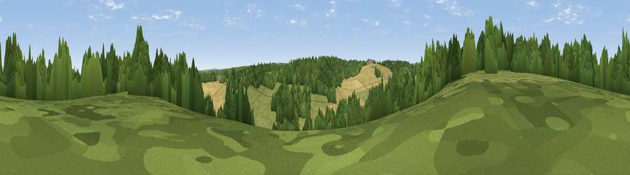

Viewpoint near Wichling
#35156 in England · top 59% of its area beats it · near WichlingThe view, rendered

A 360° render of this exact spot computed from the terrain model, tree cover and land cover — summer colours, afternoon light, calibrated against photographs of famous viewpoints. Real trees, hedges and buildings will differ in detail.
The panorama
Grey silhouette: terrain skyline in each direction (720 bearings, Earth curvature and refraction included). Dashed green: skyline with trees (+15 m) and buildings (+8 m) as obstacles. Blue strip: how far the ground is visible on each bearing.
Where the view opens
Wedge length = distance to the farthest visible ground on that bearing (vegetation-aware). Rings at 10, 25 and 50 km.
What fills the view
35% cropland · 34% woodland · 30% grassland ·
Angular shares of the visible panorama (visual magnitude), not map area. Landscape diversity 0.52 (0–1 Shannon).
Key numbers
More beautiful places nearby
The staircase of upgrades: each row has a higher view potential than everything closer. Driving times are estimates from straight-line distance, calibrated against real road routing — check an actual route before setting out.
| Place | Direction | Drive | Score |
|---|---|---|---|
| Ashdown Hill | SW · 1 km | ~4 min | 39.2 |
| Viewpoint near Lenham | SSW · 4 km | ~9 min | 56.7 |
| Viewpoint near Harrietsham | SW · 4 km | ~10 min | 57.3 |
| Viewpoint near Hollingbourne | WSW · 6 km | ~13 min | 59.1 |
| Viewpoint near Charing | SSE · 7 km | ~15 min | 68.6 |
| Viewpoint near Westwell | SE · 11 km | ~21 min | 72.2 |
| Viewpoint near Lympne | SE · 28 km | ~45 min | 72.6 |
| Tolsford Hill | SE · 30 km | ~48 min | 77.9 |
51.27840, 0.74325 · source: screening · position refined by local search. Computed location — check access rights before visiting.